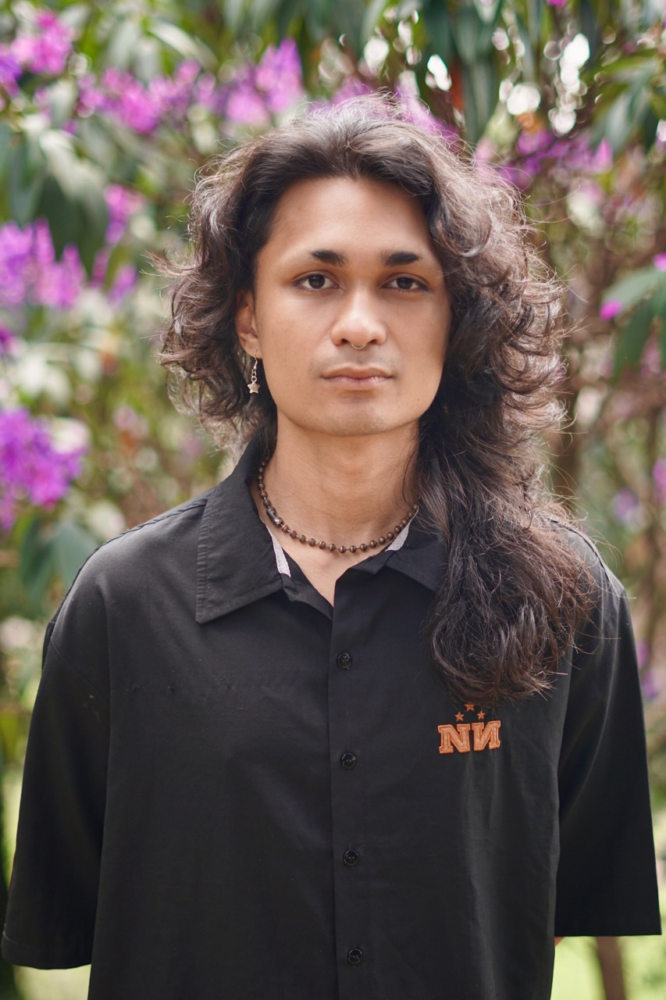
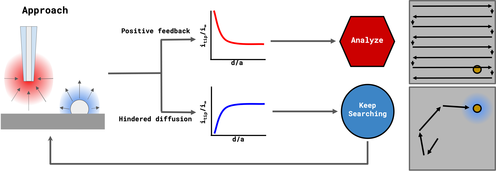
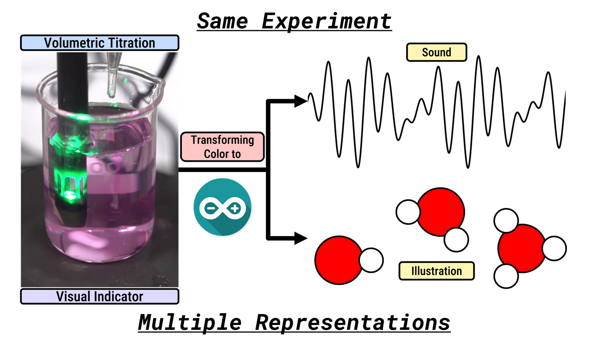
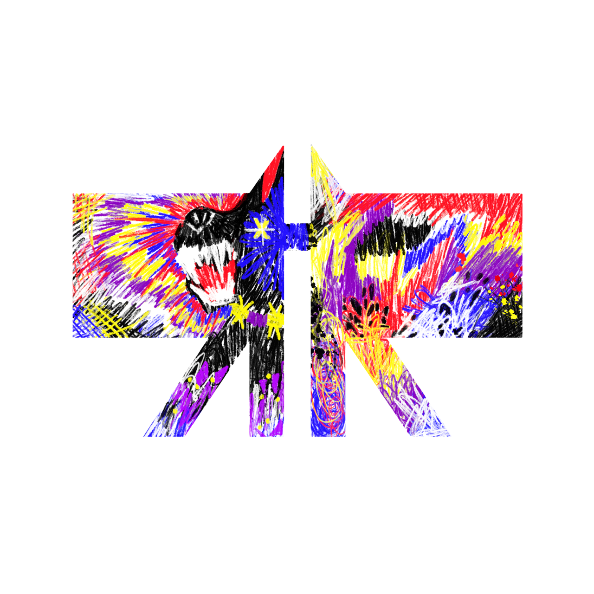
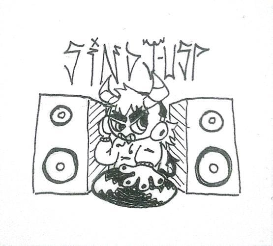
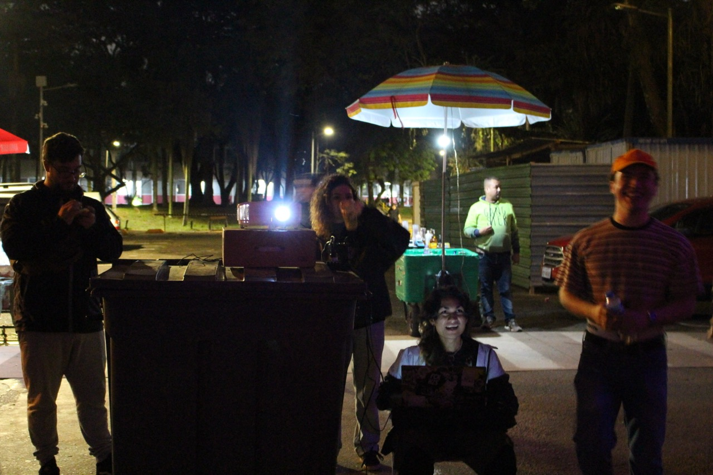

I'm a chemistry undergraduate student at the University of São Paulo
(Brazil), interested in automation and instrumentation. Working at
FuNIILab under
supervision of
Prof. Gabriel N. Meloni
developing low-cost instrumentation for education and research!
Always starting a new project and collecting pieces of knowledge, from
art to science.

Automating Scanning Electrochemical Microscopy: Decision Making in The Loop
This project proposes the development of an autonomous guidance system for Scanning Electrochemical Microscopy (SECM) to improve efficiency in the investigation of structures of interest. Conventional SECM experiments require full-area scanning and post-acquisition data processing, which is time-consuming when the structures are sparsely distributed. The central objective is to integrate real-time electrochemical simulations and control algorithms to enable adaptive probe navigation.

Volumetric Titrations with (Non-)Visual Indicators: How Low-Cost Assistive Technology Can Make Existing Experiments More Accessible
This project proposes a framework that allows experiments that depend on a specific sensory modality, such as volumetric titrations, to be translated into other sensory stimuli, such as sound, and used to support accessible education in accordance with the principles of Universal Design for Learning.
Crochet
Programming

CANiL

SinDJ-USP

VJ